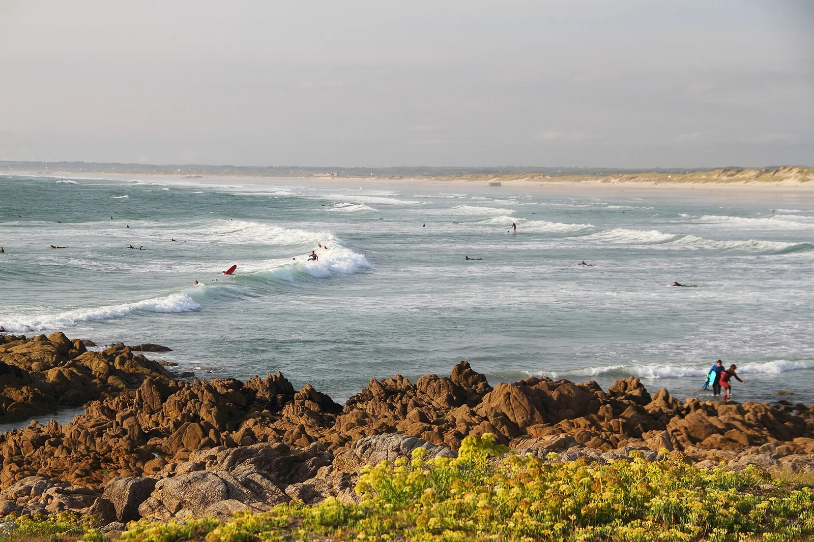

La Torche
Finistère, France · surf, windsurf, kitesurf

Longue plage exposée à la houle de l'Atlantique, fonctionne quasiment toute l'année. Spot de référence en Bretagne pour le surf, et pour le windsurf et le kitesurf les jours de vent.
- Lieu
- Finistère, France
- Niveau
- Intermédiaire
- Activités
- surf, windsurf, kitesurf
- Type d'eau
- Mer / océan
- Coordonnées
- 47.84, -4.36 (position approximative du secteur)
Dangers à connaître
- Vent souvent fort, peut rendre la mer hachée.
- Houle puissante quand l'Atlantique se réveille.
- Eau froide : combinaison indispensable.
Le conseil d'Ocean Buddy
Mets une bonne combi (4/3 mini) ! La Torche reçoit toute la houle, regarde la taille annoncée avant d'y aller.
Ouvrir dans Ocean Buddy Télécharger sur l'App Store
Source : Description historique Ocean Buddy · vérification externe en attente.